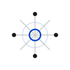
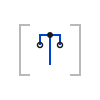
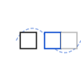
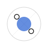
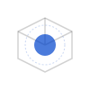
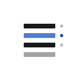
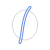
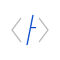
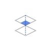

Masaryk University / NCBR
2021 – Present
Principal Investigator leading a team developing macromolecular analysis and visualization tools.
My work focuses on defining data representations, visualization systems, and platform architectures. This includes Mol* (the visualization standard across PDB and AlphaFold DB), BinaryCIF (high-performance structural data format), and DBTL orchestration platforms used in modern drug discovery.
Principal Investigator leading a team developing macromolecular analysis and visualization tools.
Research Specialist focused on structural bioinformatics and chemical pattern detection.
Working on a protein engineering platform.
Owned the development and architectural evolution of custom DBTL orchestration/LIMS platform. Engineered automated pipelines that transformed manual, low-throughput processes into high-volume centralized systems.
Establishing shared visualization standards (Mol*, BinaryCIF) across the global structural biology ecosystem.
Masaryk University, Faculty of Science
Masaryk University, Faculty of Informatics
Masaryk University, Faculty of Informatics
A multi-year architectural arc representing a continuous compression of the problem space: from pioneering early browser-based rendering (LiteMol), to establishing the unified ecosystem standard (Mol*), and ultimately defining a global declarative language for sharing molecular data (MolViewSpec).

A visualization and data access layer that became the de facto standard across the global structural biology ecosystem. It unified previously fragmented tooling into a shared runtime used by the PDB, AlphaFold DB (200M+ structures), and major research institutions, enabling consistent interaction with molecular data at scale.

A declarative language for describing complex molecular scenes.

A tool for creating and sharing interactive molecular stories.

A tool for exploring mesoscale molecular structures.

Extending Mol* to support efficient visualization of volumetric data and segmentations, enabling integrated exploration of density maps and structural models.
The pioneering precursor to Mol* for fast, browser-based 3D macromolecular visualization.
Solving the physics of high-volume scientific data transmission. Designing bespoke compression standards (BinaryCIF) and scalable, on-demand query services (ModelServer/VolumeServer) to shift bottlenecks from network bandwidth to localized compute, thereby enabling platforms like the wwPDB to distribute massive datasets in real time.
A macromolecular data format reducing structural data footprints by up to ~75%.

Scalable delivery mechanisms for high-performance data transfer across the wwPDB.
Translating structural complexity into computable geometry. Abstracting molecular analysis by building domain-specific query languages (MolQL) alongside highly specialized algorithms (MOLE) to empower researchers with systematic, mathematically rigorous tools.

Tools for the detection and characterization of tunnels and channels in biomacromolecules.

A tool for searching and analyzing structural patterns in biomacromolecules. Precursor to MolQL.
A tool for calculating atomic charges in biomacromolecules.
A tool for validation of ligands in the Protein Data Bank.
